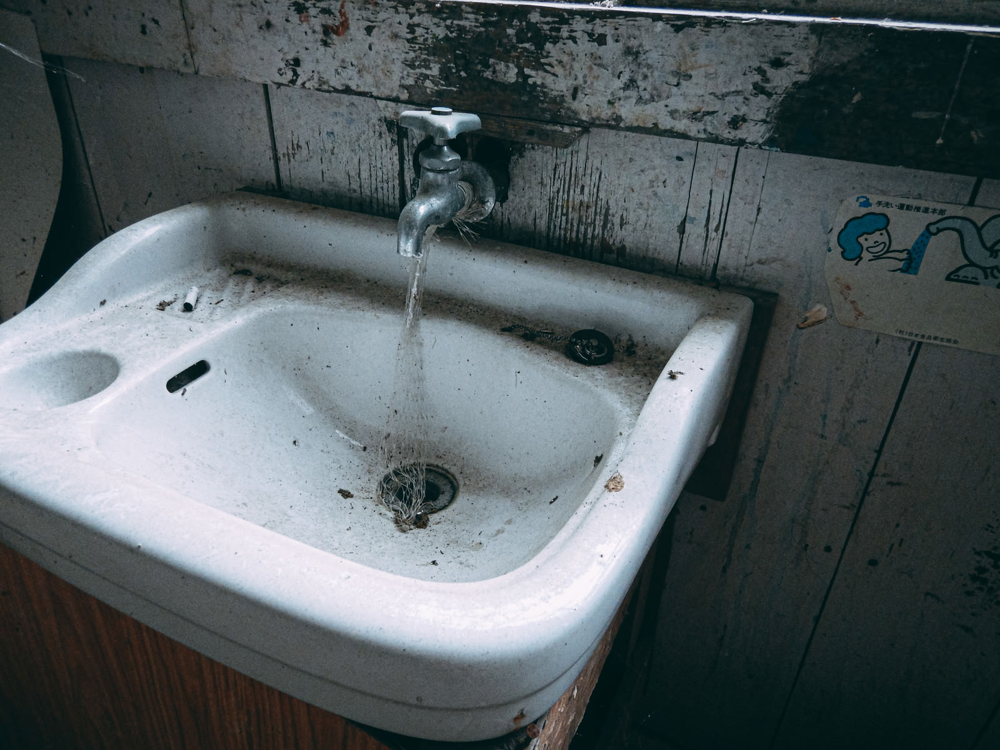

全国順位3位
共感者：13人
周りにいる幽霊の数1人
全国順位3位
共感者：13人
周りにいる幽霊の数1人
名城大学の図書館―― 重たい扉を押すと、すっと空気が冷たくなる。特に3階の女子トイレは、誰も使いたがらない場所だった。少し古くて、壁紙は一部剥がれ、水道の金属は酸化して緑がかっている。照明もところどころチカチカと不安定で、夜に入ればそれだけで背筋が凍るという。 「花子、そんなとこで自習してんの？怖くないの？」 「別に。静かだし。」 名城 花子は名城大学の教育学部3年。実家が近いこともあり、夜遅くまで図書館に残るのが習慣だった。 その夜も、23時を過ぎた頃。 トイレに立った彼女は、何気なく3階奥の女子トイレへと足を向けた。 ひんやりとした空気。音のない空間。 洗面台の前に立ち、蛇口をひねると―― ぶく……ぶく…… 水ではなく、赤い泡があふれ出してきた。 「またか……」 彼女は一度、それを見たことがあった。 でも、その時は何も起きなかった。だから今回も、大丈夫だと思っていた。 ……そのときだった。 「みつけた。」 背後から、耳元で声がした。 ぎくりとして振り返ると、個室の一つ――いつからか半開きになっていたそこに、誰かが立っていた。 髪の長い女。顔は見えない。 ただ、蛇口からあふれる泡と同じく、全身が赤い泡に濡れていた。 女は一歩ずつ、ゆっくりと花子の方へ近づいてくる。 「思い出して……わたしを。」 「えっ……？」 足がすくんで動けない。 耳の奥に、泡が弾けるような音が鳴り響く。 女はもう目の前だった。 赤い泡が、花子の足元に染み出してくる。 「あなたの中に、いるでしょ？」 その瞬間、花子の脳裏に、知らない記憶が流れ込んできた。 図書館で声を殺して泣いていた少女。名札の「名城」という名字。赤いリボン。泡立つ洗面台。そして、首をかしげて笑う顔。 「……やめて」 声にならない叫びとともに、意識が闇に沈んでいった。 翌朝、トイレの洗面台には泡が一面に広がり、鏡には血でかいたような赤い文字が残されていた。 「思い出して、わたしを」 その日以来、花子の姿を見た者はいない。